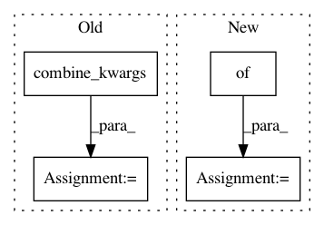

66dbad816118620303518dc5479bfe23977a2d30,batchflow/models/tf/encoder_decoder.py,EncoderDecoder,head,#Any#Any#Any#Any#,169
Before Change
channels = cls.num_channels(targets)
if cls.num_channels(x) != channels:
with tf.variable_scope("conv1x1"):
args = cls.combine_kwargs(kwargs, dict(layout="c", kernel_size=1, filters=channels))
x = conv_block(x, **args)
return x
After Change
channels = cls.num_channels(targets)
if cls.num_channels(x) != channels:
with tf.variable_scope("conv1x1"):
args = {**kwargs, **dict(layout="c", kernel_size=1, filters=channels)}
x = conv_block(x, **args)
return x
In pattern: SUPERPATTERN
Frequency: 3
Non-data size: 4
Instances
Project Name: analysiscenter/batchflow
Commit Name: 66dbad816118620303518dc5479bfe23977a2d30
Time: 2019-07-31
Author: 7520522+a-arefina@users.noreply.github.com
File Name: batchflow/models/tf/encoder_decoder.py
Class Name: EncoderDecoder
Method Name: head
Project Name: analysiscenter/batchflow
Commit Name: 66dbad816118620303518dc5479bfe23977a2d30
Time: 2019-07-31
Author: 7520522+a-arefina@users.noreply.github.com
File Name: batchflow/models/tf/encoder_decoder.py
Class Name: EncoderDecoder
Method Name: decoder
Project Name: analysiscenter/batchflow
Commit Name: 66dbad816118620303518dc5479bfe23977a2d30
Time: 2019-07-31
Author: 7520522+a-arefina@users.noreply.github.com
File Name: batchflow/models/tf/encoder_decoder.py
Class Name: EncoderDecoder
Method Name: encoder